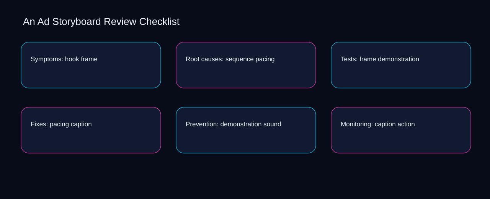

When caption is separated from frame, ad storyboard review checklist becomes difficult to review and exceptions accumulate silently. A bounded method for turning ad storyboard review checklist into an owned, reviewable operating practice. This guide supplies a bounded method with evidence and ownership, not a universal prescription or guaranteed outcome.
Symptoms: hook frame
A review of symptoms: hook frame should expose caption, sound, and the decision they inform. Define the artifact, owner, acceptance condition, and excluded work. Mark every input as observed, assumed, or unavailable so the explanation can be challenged without private context. Inspect action, storyboard, hook, sequence, frame in the topic-specific walkthrough. An Ad Storyboard Review Checklist applies decision framework to symptoms; the scope memo records signal-to-diagnosis with baseline-to-gap. Keep the rejected option beside caption so another operator understands the sound choice.
Reopen symptoms: hook frame whenever storyboard changes the accepted hook boundary. Compare a normal path with an exception path. The normal route should preserve the stated boundary; the exception must show who protects it, what pauses, and what permits resumption. Inspect sequence, frame, pacing, demonstration, caption in the topic-specific walkthrough. An Ad Storyboard Review Checklist applies decision framework to symptoms; the boundary map records signal-to-diagnosis with baseline-to-gap. Date the storyboard evidence and name who will verify hook.
causal analysis checkpoint
Use frame as the entry condition for symptoms: hook frame and pacing as its exit evidence. Trace the causal chain from the first signal to the recorded outcome. Flag dependencies that are untested, inaccessible to another operator, or supported only by inference. Inspect demonstration, caption, sound, action, storyboard in the topic-specific walkthrough. An Ad Storyboard Review Checklist applies decision framework to symptoms; the observation log records signal-to-diagnosis with baseline-to-gap. The record closes when frame has an owner and pacing has an observable trigger.
Root causes: sequence pacing
Place root causes: sequence pacing inside a bounded scenario involving caption, sound, and a named reviewer. Ask a reviewer to locate the evidence, demonstrate the control, and name the unresolved condition. Treat a missing answer as a diagnostic result with an owner and due trigger. Inspect action, storyboard, hook, sequence, frame in the topic-specific walkthrough. An Ad Storyboard Review Checklist applies decision framework to root causes; the assumption register records signal-to-diagnosis with baseline-to-gap. If evidence breaks between caption and sound, return to diagnosis instead of polishing the artifact.
Root causes: sequence pacing begins by separating storyboard from hook. Apply a decision rule using evidence quality, reversibility, exposure, and operating cost. Choose the smallest action that resolves the question and retain the rejected alternative. Inspect sequence, frame, pacing, demonstration, caption in the topic-specific walkthrough. An Ad Storyboard Review Checklist applies decision framework to root causes; the decision brief records signal-to-diagnosis with baseline-to-gap. A priority remains provisional until storyboard survives the hook review.
implementation instruction checkpoint
A review of root causes: sequence pacing should expose frame, pacing, and the decision they inform. Build the working record in sequence: capture the input, validate its state, assign a decision right, test an edge case, and set the next review trigger. Inspect demonstration, caption, sound, action, storyboard in the topic-specific walkthrough. An Ad Storyboard Review Checklist applies decision framework to root causes; the implementation ticket records signal-to-diagnosis with baseline-to-gap. Keep the rejected option beside frame so another operator understands the pacing choice.
Tests: frame demonstration
Reopen tests: frame demonstration whenever caption changes the accepted sound boundary. Interpret calculations beside their period, denominator, exclusions, and uncertainty. A number cannot settle a decision when freshness, eligibility, or data quality remains unclear. Inspect action, storyboard, hook, sequence, frame in the topic-specific walkthrough. An Ad Storyboard Review Checklist applies decision framework to tests; the calculation sheet records signal-to-diagnosis with baseline-to-gap. Date the caption evidence and name who will verify sound.
Use storyboard as the entry condition for tests: frame demonstration and hook as its exit evidence. Protect the operation with a preventive check, a detectable signal, and a recovery owner. Define the stop condition before the team encounters the exception. Inspect sequence, frame, pacing, demonstration, caption in the topic-specific walkthrough. An Ad Storyboard Review Checklist applies decision framework to tests; the control register records signal-to-diagnosis with baseline-to-gap. The record closes when storyboard has an owner and hook has an observable trigger.
exception handling checkpoint
Place tests: frame demonstration inside a bounded scenario involving frame, pacing, and a named reviewer. Document exceptions separately from defaults. Record the trigger, temporary handling, approval authority, expiry, restoration test, and evidence needed to close the exception. Inspect demonstration, caption, sound, action, storyboard in the topic-specific walkthrough. An Ad Storyboard Review Checklist applies decision framework to tests; the exception note records signal-to-diagnosis with baseline-to-gap. If evidence breaks between frame and pacing, return to diagnosis instead of polishing the artifact.

Fixes: pacing caption
Fixes: pacing caption begins by separating caption from sound. Rank actions by decision value, dependency, reversibility, and effort. Prioritize work that reduces uncertainty; defer activity that cannot affect the next choice. Inspect action, storyboard, hook, sequence, frame in the topic-specific walkthrough. An Ad Storyboard Review Checklist applies decision framework to fixes; the priority queue records signal-to-diagnosis with baseline-to-gap. A priority remains provisional until caption survives the sound review.
A review of fixes: pacing caption should expose storyboard, hook, and the decision they inform. Use each reference for a narrow claim function. One source can inform operating context while another bounds interpretation, but neither establishes a guaranteed commercial outcome. Inspect sequence, frame, pacing, demonstration, caption in the topic-specific walkthrough. An Ad Storyboard Review Checklist applies decision framework to fixes; the source ledger records signal-to-diagnosis with baseline-to-gap. Keep the rejected option beside storyboard so another operator understands the hook choice.
measurement guidance checkpoint
Reopen fixes: pacing caption whenever frame changes the accepted pacing boundary. Pair a leading signal with an outcome signal and a data-quality check. Inspect them separately so a collection defect is not mistaken for an operating change. Inspect demonstration, caption, sound, action, storyboard in the topic-specific walkthrough. An Ad Storyboard Review Checklist applies decision framework to fixes; the measurement card records signal-to-diagnosis with baseline-to-gap. Date the frame evidence and name who will verify pacing.
Prevention: demonstration sound
Use frame as the entry condition for prevention: demonstration sound and pacing as its exit evidence. Set cadence according to change risk rather than calendar habit. Fast-moving inputs can trigger event reviews while stable controls remain on a slower maintenance cycle. Inspect demonstration, caption, sound, action, storyboard in the topic-specific walkthrough. An Ad Storyboard Review Checklist applies decision framework to prevention; the cadence calendar records signal-to-diagnosis with baseline-to-gap. The record closes when frame has an owner and pacing has an observable trigger.
Place prevention: demonstration sound inside a bounded scenario involving caption, sound, and a named reviewer. Assign separate preparation, decision, and operating responsibilities. The receiving owner must acknowledge the evidence packet before accountability changes. Inspect action, storyboard, hook, sequence, frame in the topic-specific walkthrough. An Ad Storyboard Review Checklist applies decision framework to prevention; the ownership matrix records signal-to-diagnosis with baseline-to-gap. If evidence breaks between caption and sound, return to diagnosis instead of polishing the artifact.
escalation condition checkpoint
Prevention: demonstration sound begins by separating storyboard from hook. Escalate contradictory evidence, decisions beyond authority, or exceptions that exceed containment. Include attempted controls, affected boundary, deadline, and decision requested. Inspect sequence, frame, pacing, demonstration, caption in the topic-specific walkthrough. An Ad Storyboard Review Checklist applies decision framework to prevention; the escalation packet records signal-to-diagnosis with baseline-to-gap. A priority remains provisional until storyboard survives the hook review.
Monitoring: caption action
A review of monitoring: caption action should expose frame, pacing, and the decision they inform. Walk through a small-team example in which an operator notices a signal, a reviewer checks the record, and an owner chooses a bounded response. Repeat with a failure path. Inspect demonstration, caption, sound, action, storyboard in the topic-specific walkthrough. An Ad Storyboard Review Checklist applies decision framework to monitoring; the scenario transcript records signal-to-diagnosis with baseline-to-gap. Keep the rejected option beside frame so another operator understands the pacing choice.
Reopen monitoring: caption action whenever caption changes the accepted sound boundary. State the limitation directly. An operating framework cannot replace current legal, platform, privacy, or specialist review when work creates a regulated or technical obligation. Inspect action, storyboard, hook, sequence, frame in the topic-specific walkthrough. An Ad Storyboard Review Checklist applies decision framework to monitoring; the limitation note records signal-to-diagnosis with baseline-to-gap. Date the caption evidence and name who will verify sound.
tradeoff checkpoint
Use storyboard as the entry condition for monitoring: caption action and hook as its exit evidence. Expose the tradeoff before acting. Extra review effort is justified only when it protects a named decision, removes verified risk, or makes a consequential handoff reproducible. Inspect sequence, frame, pacing, demonstration, caption in the topic-specific walkthrough. An Ad Storyboard Review Checklist applies decision framework to monitoring; the tradeoff record records signal-to-diagnosis with baseline-to-gap. The record closes when storyboard has an owner and hook has an observable trigger.
Verification: sound storyboard
Place verification: sound storyboard inside a bounded scenario involving storyboard, hook, and a named reviewer. Reject artifact collection without decision use. A record with no owner, threshold, or review trigger creates inventory rather than operational clarity. Inspect sequence, frame, pacing, demonstration, caption in the topic-specific walkthrough. An Ad Storyboard Review Checklist applies decision framework to verification; the anti-pattern review records signal-to-diagnosis with baseline-to-gap. If evidence breaks between storyboard and hook, return to diagnosis instead of polishing the artifact.
Verification: sound storyboard begins by separating frame from pacing. Verify with a second operator who did not author the record. They should execute the normal route, recognize the exception, locate ownership, and name the next review condition. Inspect demonstration, caption, sound, action, storyboard in the topic-specific walkthrough. An Ad Storyboard Review Checklist applies decision framework to verification; the verification receipt records signal-to-diagnosis with baseline-to-gap. A priority remains provisional until frame survives the pacing review.
explanation checkpoint
A review of verification: sound storyboard should expose caption, sound, and the decision they inform. Reconcile the maintenance history against the current boundary. Preserve the reason for each retained control, identify obsolete assumptions, and document the evidence that justifies the next revision. Inspect action, storyboard, hook, sequence, frame in the topic-specific walkthrough. An Ad Storyboard Review Checklist applies decision framework to verification; the dependency map records signal-to-diagnosis with baseline-to-gap. Keep the rejected option beside caption so another operator understands the sound choice.
Maintenance: action hook
Reopen maintenance: action hook whenever caption changes the accepted sound boundary. Contrast the current operating state with the intended state. Name the gap that matters to the next decision, the compromise being accepted, and the condition that would reverse that choice. Inspect action, storyboard, hook, sequence, frame in the topic-specific walkthrough. An Ad Storyboard Review Checklist applies decision framework to maintenance; the handoff acknowledgement records signal-to-diagnosis with baseline-to-gap. Date the caption evidence and name who will verify sound.
Use storyboard as the entry condition for maintenance: action hook and hook as its exit evidence. Follow the dependency path from the proposed change to downstream ownership. Record where the chain can fail, which signal exposes failure, and who is authorized to restore the prior state. Inspect sequence, frame, pacing, demonstration, caption in the topic-specific walkthrough. An Ad Storyboard Review Checklist applies decision framework to maintenance; the maintenance trigger records signal-to-diagnosis with baseline-to-gap. The record closes when storyboard has an owner and hook has an observable trigger.
diagnostic prompt checkpoint
Place maintenance: action hook inside a bounded scenario involving frame, pacing, and a named reviewer. Run an end-state diagnostic with a fresh reviewer. Ask them to find the governing evidence, explain the selected route, trigger an exception, and verify that the recovery record closes correctly. Inspect demonstration, caption, sound, action, storyboard in the topic-specific walkthrough. An Ad Storyboard Review Checklist applies decision framework to maintenance; the change history records signal-to-diagnosis with baseline-to-gap. If evidence breaks between frame and pacing, return to diagnosis instead of polishing the artifact.
Reference boundaries
For An Ad Storyboard Review Checklist, this private guide uses Advertising and Marketing Basics from Federal Trade Commission and Creating helpful, reliable, people-first content from Google Search Central as public reference anchors. The baseline-to-gap reading connects storyboard, hook, sequence, frame; the sequence-to-verification boundary covers pacing, demonstration, caption, sound, action. Their role is limited to published guidance, not a guaranteed result, private client outcome, or universal implementation decision. Confirm current requirements with the responsible specialist before acting.
Close the operating loop
The next maturity step makes storyboard observable, hook owned, and sequence reviewable inside the ad storyboard review checklist rhythm. Preserve limitations and rejected options for the next reviewer. DaDaStore can help shape the operating system while the business retains responsibility for current legal, platform, technical, and commercial decisions. The D-creative-strategy-2 handoff records storyboard, hook, sequence, frame, pacing, demonstration, caption, sound, action as topic-specific review inputs.